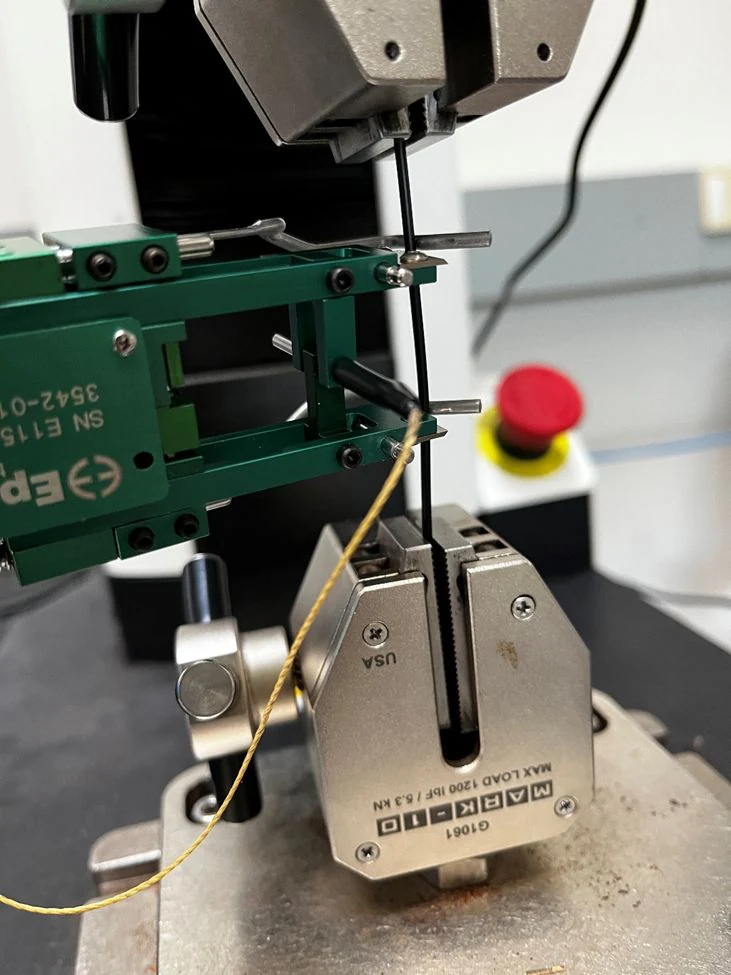
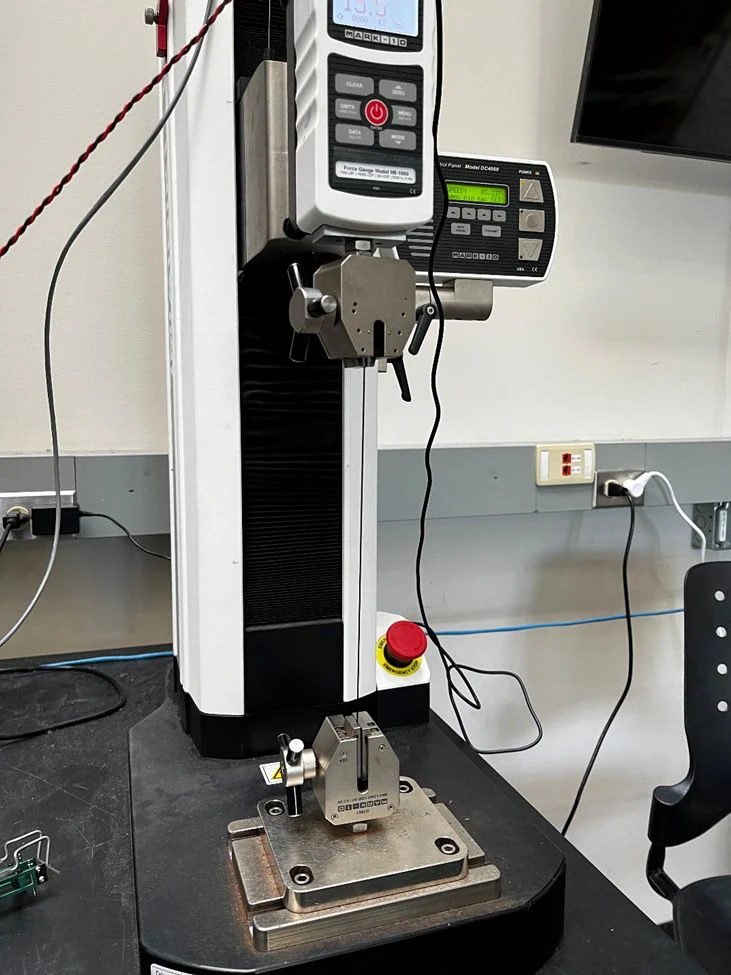
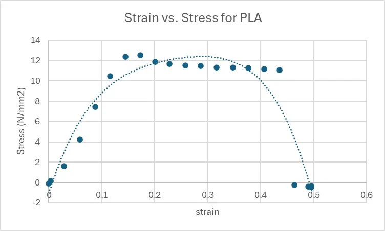
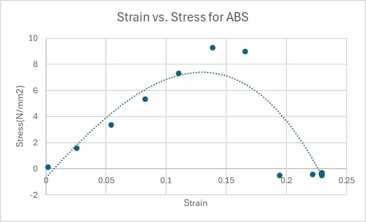
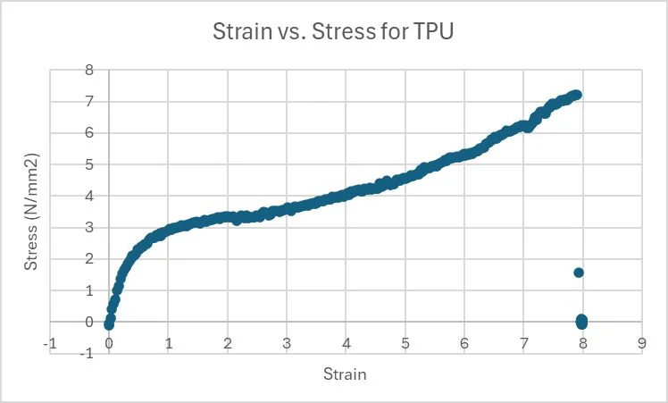

Tensile Testing of 3D-Printing Polymers
A solo undergraduate research poster through CSU's Office for Undergraduate Research and Artistry (OURA), titled "Extrapolating the biodegradability of 3D-Printing polymers based on their tensile strength." I asked whether tensile data from PLA, ABS, and TPU filament could predict how the three compare in natural degradation.
My focus: Tensile testing, stress-strain curves, and Young's modulus calculations for all three filaments, plus the biodegradability prediction drawn from them.

- Test
- Tensile, three filaments
- PLA Young's modulus
- 92.26 N/mm²
- ABS Young's modulus
- 69.69 N/mm²
- TPU Young's modulus
- 7.825 N/mm²
Question
3D-printing filaments are described as biodegradable, but only in industrial composting and anaerobic digestion. In natural environments and everyday use, they add to the plastic footprint. I asked whether tensile properties could predict which filament would last longest before any observable natural degradation, and whether tensile strength correlates with biodegradability.
Test
I tested PLA, ABS, and TPU filament on a tensile tester in the CSU Materials Lab, using what I learned in MECH 231. I used an extensometer for the PLA test. I built a stress-strain curve for each filament and calculated its Young's modulus.

Results
PLA had the highest Young's modulus at 92.26 N/mm², followed by ABS at 69.69 N/mm² and TPU at 7.825 N/mm². TPU took linearly increasing force for about 180 seconds. The clamps ended that test by breaking the ends of the filament.



Conclusion
From the tensile data, I predicted that TPU needs less harsh conditions to degrade than PLA. This conflicts with the sources I referenced. The conflict points to exceptions to a simple linear correlation between tensile strength and biodegradability, and to other factors such as chemical composition, temperature, and moisture level in the filament.
Limits
I did not measure degradation. The biodegradability result is a prediction from tensile data only. I did not control moisture level, filament length, or ambient temperature. All the numbers come from one setup, so they work as a comparison between these three filaments, not as material properties.
Next
The next step would be to test decomposition directly and overlay those results on tensile strength. One open question is how to speed up decomposition of 3D-printing filaments in a chemically efficient way.